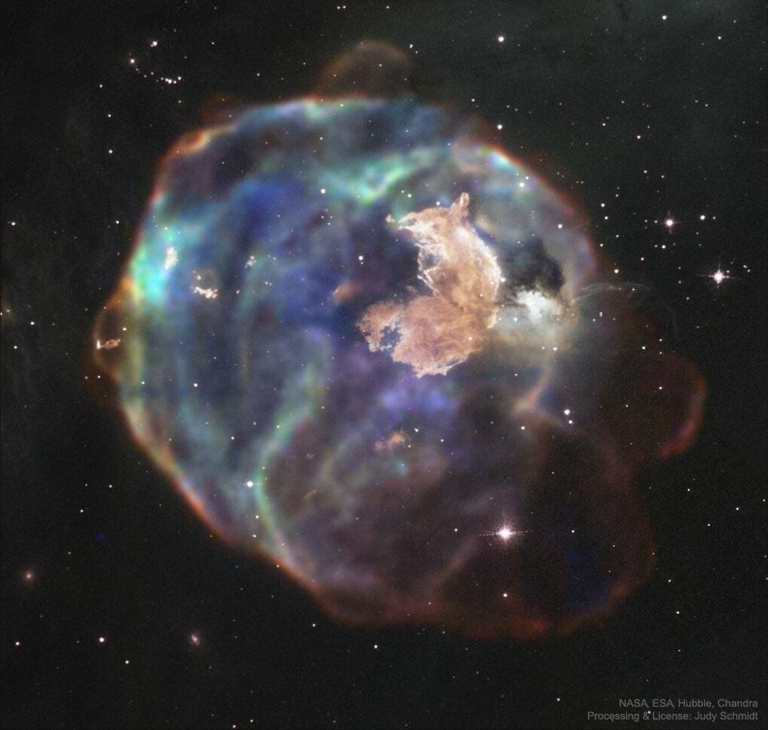
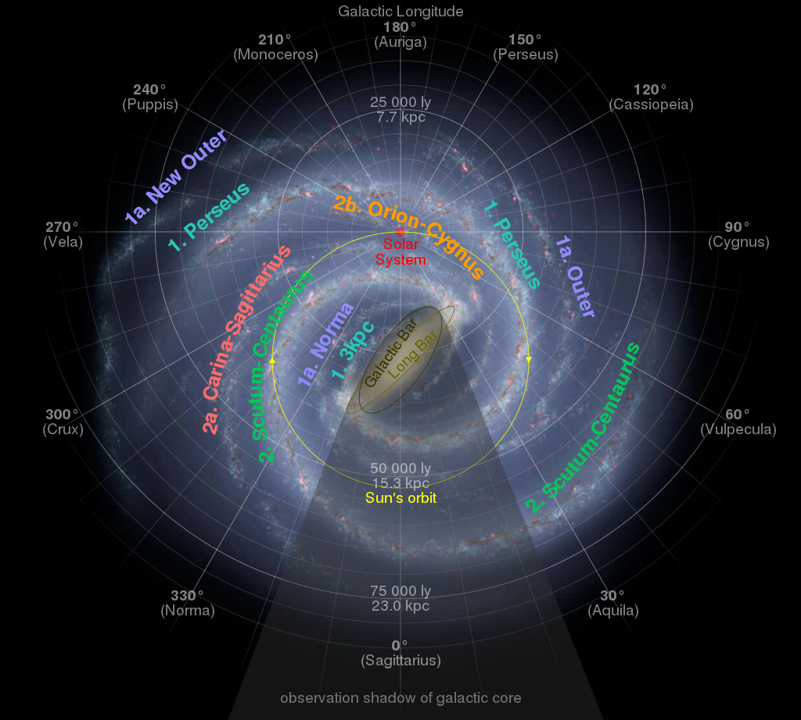
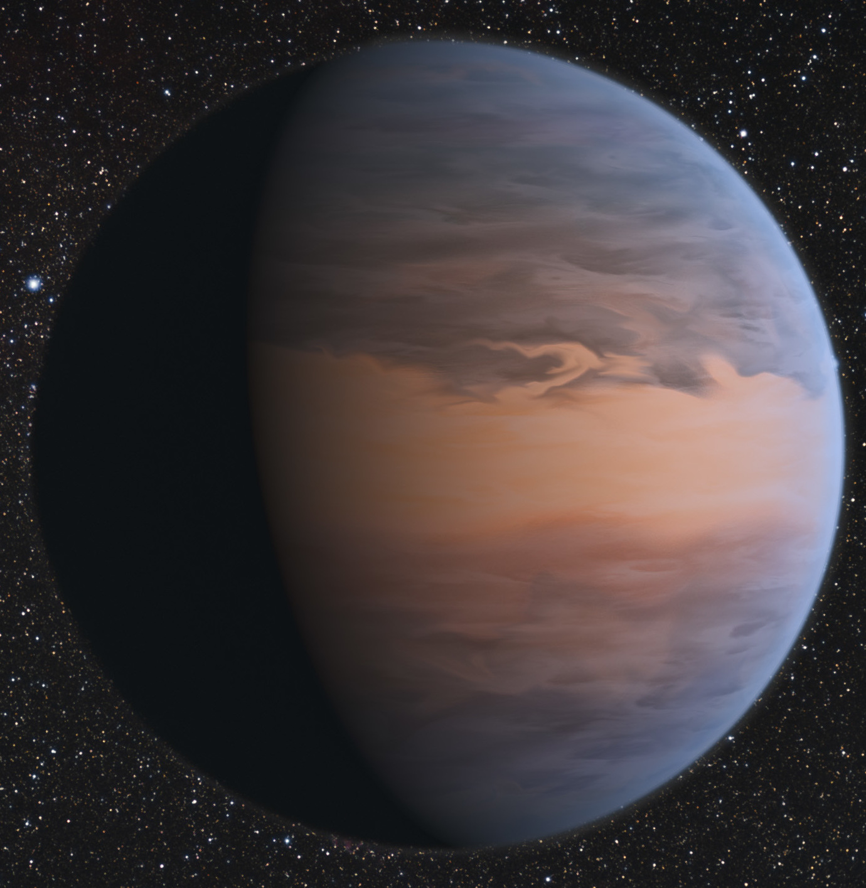

Odkrycia teleskopu Hubble'a
Dokładniejszym ustaleniu wieku Wszechświata. Dzięki obserwacjom HST takich obiektów jak gromada galaktyk w gwiazdozbiorze Panny, udało się oszacować wiek kosmosu na 13,7 miliarda lat z błędem na poziomie 10%.
Rozszerzanie się Wszechświata – obserwacje odległych supernowych (są to gwiazdy, które w wyniku wypalenia się paliwa w ich wnętrzu wybuchają gwałtownie) pozwoliły dokładnie wyznaczyć stałą Hubble’a, opisującą tempo rozszerzania się Wszechświata.
Analiza naszego Układu Słonecznego – dzięki HST zaobserwowano między innymi zderzenie komety Shoemaker‐Levy 9 z Jowiszem, odkryto piąty księżyc Plutona, analizowano drobne ciała niebieskie z pasa Kuipera, które następnie można było badać przy pomocy sond kosmicznych.
Oszacowanie wymiarów i masy Drogi Mlecznej. Zawiera około 400 miliardów gwiazd. Ma średnicę około 100 000 lat świetlnych i grubość ok. 1000 lat świetlnych. Szacuje się, że waga Drogi Mlecznej to około 1,5 biliona mas Słońca.
Czarne dziury w centrach galaktyk – obserwacje wielu galaktyk i analiza ich promieniowania potwierdzają teorię, że w centrum każdej galaktyki znajduje się czarna dziura.
Pierwsze odkrycie i zbadanie atmosfery planety pozasłonecznej – HD209458b, nazywanej Ozyrysem. Ozyrys znajduje się w gwiazdozbiorze Pegaza. Jest to pierwsza planeta pozasłoneczna, u której zaobserwowano atmosferę i zbadano jej skład chemiczny
